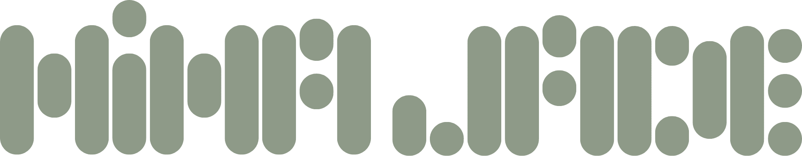

Una selección de estilos para que puedas conocer mi voz y mi forma de interpretar cada proyecto.
Una voz que capta la atención desde el primer segundo y refuerza el mensaje de tu campaña.
Ver más →Una locución clara y profesional para transmitir confianza y credibilidad.
Ver más →Explicaciones naturales y dinámicas que ayudan a mantener la atención del alumno.
Ver más →Interpretaciones cercanas y cuidadas para conectar con quien escucha.
Ver más →¿Buscas algo diferente?
Descubre todas mis especialidades y encuentra la voz que mejor se adapta a tu proyecto.
Todos los serviciosDesde pequeña, me ha apasionado el mundo de la comunicación y la forma en la que una historia, cuando está bien contada, puede conectar con las personas.
Estudié Comunicación Audiovisual, me especialicé con un Máster en Marketing Digital y, con el tiempo, descubrí en la locución el lugar donde podía unir mi pasión por la comunicación, la creatividad y la interpretación.
Hoy construyo mi trayectoria como locutora profesional, poniendo mi voz al servicio de proyectos que buscan transmitir su mensaje con naturalidad, personalidad y credibilidad.
Cada locución se graba desde un estudio acondicionado acústicamente y equipado con material profesional para garantizar un sonido limpio, natural y consistente.
Trabajo con un micrófono Shure SM7B y una interfaz Audient iD14, una combinación que me permite ofrecer grabaciones de calidad profesional y un sonido cuidado desde el origen.
Gracias a ello puedo adaptarme a los tiempos de cada proyecto, mantener una calidad constante y entregar los archivos listos para utilizar.
Respuesta en menos de 24 horas
Presupuesto sin compromiso
Audio listo para utilizar